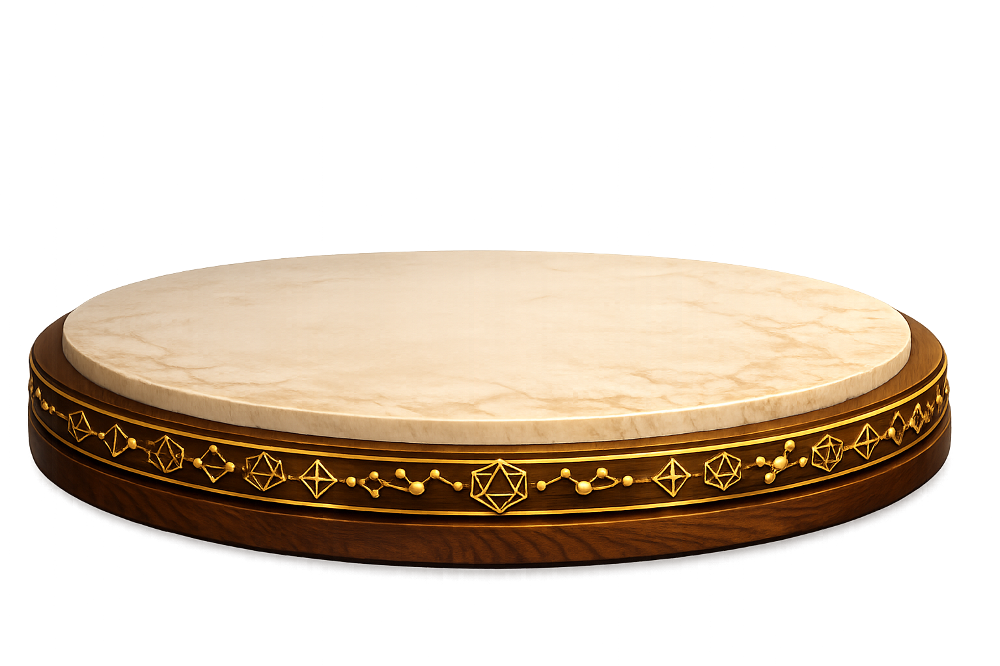

Molecular Geometry
Discover why each molecule has the shape it has, by observing how electron clouds arrange themselves around a central atom.

Teacher Rafaela
Today we will understand why molecules have the shapes they have.

You understood where molecular geometry comes from
Electron clouds repel each other
↓
Lowest-energy spatial arrangement
↓
Bonds × lone pairs
↓
Molecular geometry
Now you know why methane is tetrahedral, ammonia is pyramidal, and water is bent — they all start from the same tetrahedral arrangement of electron clouds.